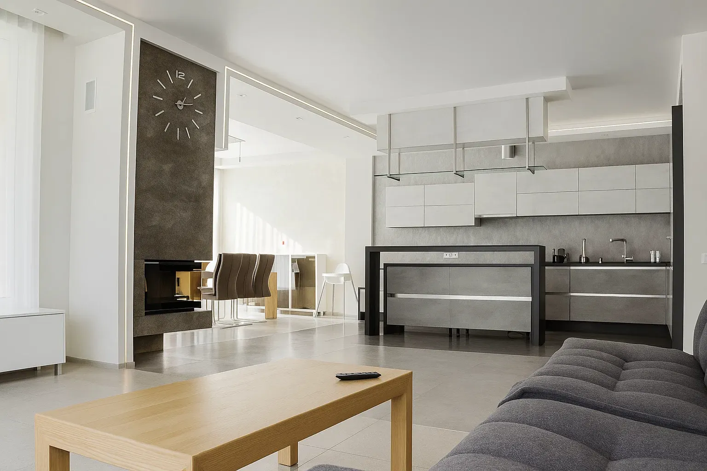
Белоостров — СНТ
Интерьер загородного дома
Architecture / Interior design / Saint Petersburg
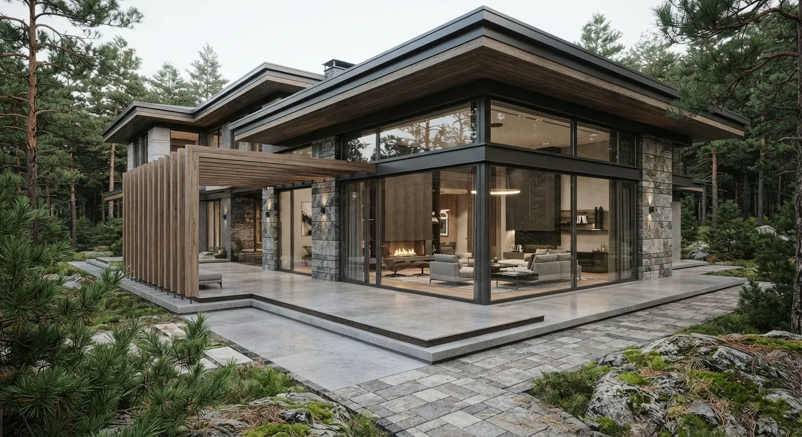
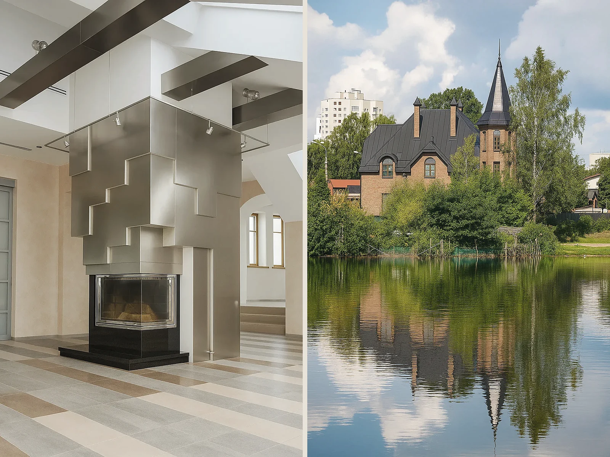
Студия
Выполняю дизайн-проекты и 3D-анимации жилых и общественных интерьеров, загородных домов и сопутствующих объектов с привязкой на генеральном плане и разработкой ландшафтного дизайна.
Многолетний опыт работы с интерьерами и различными архитектурными объектами позволяет выполнять проекты разной степени сложности.
Главный приоритет — функциональное и эргономичное пространство, учитывающее пожелания заказчика и сохраняющее единое стилистическое направление.
Selected work

Интерьер загородного дома
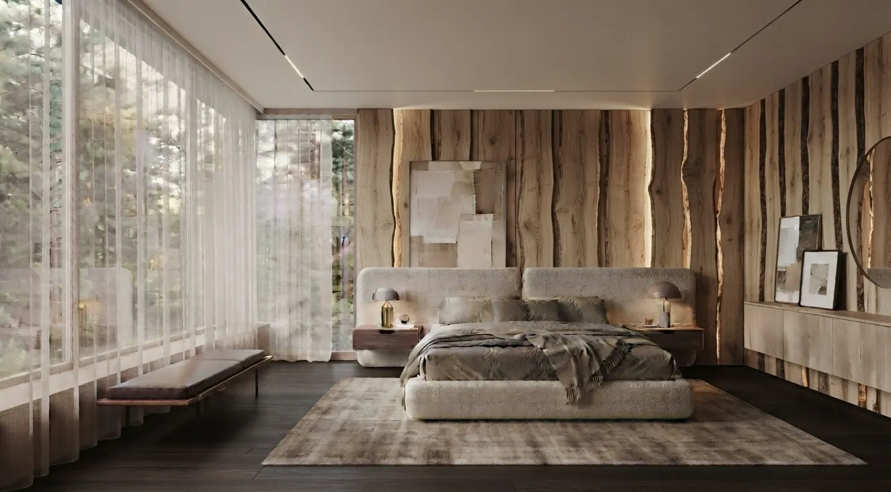
Загородный дом
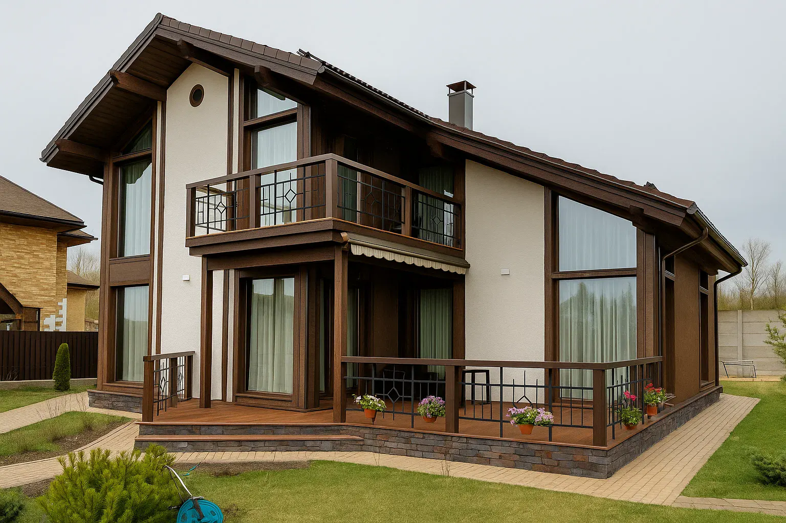
Загородный дом
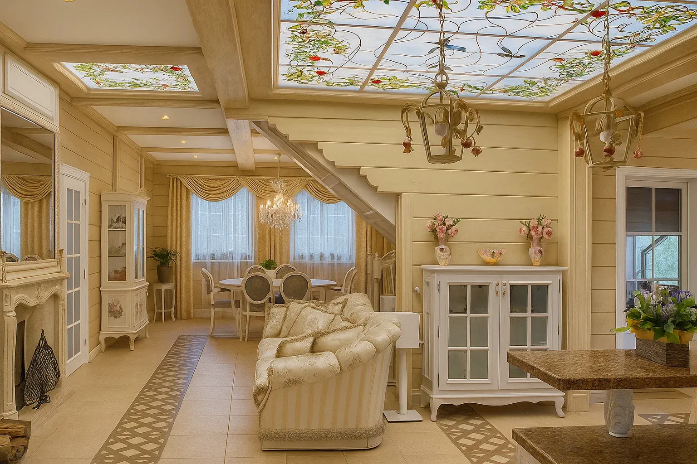
Интерьер

Интерьер загородного дома
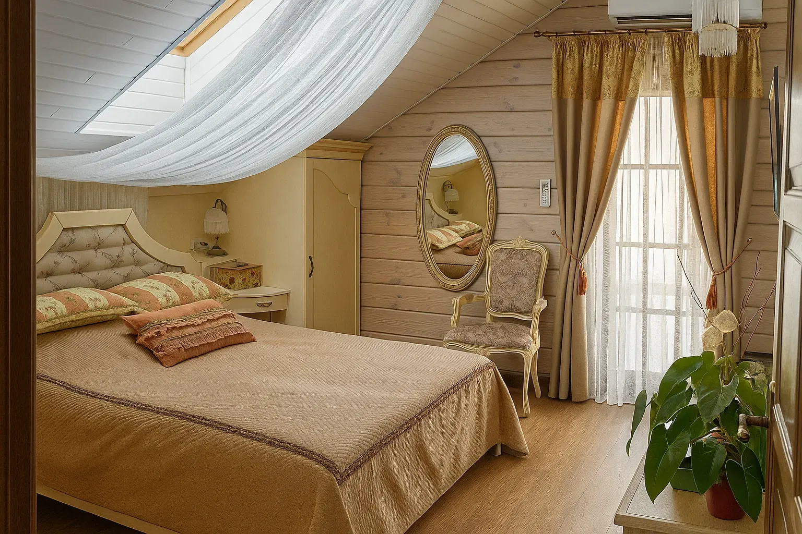
Загородный дом
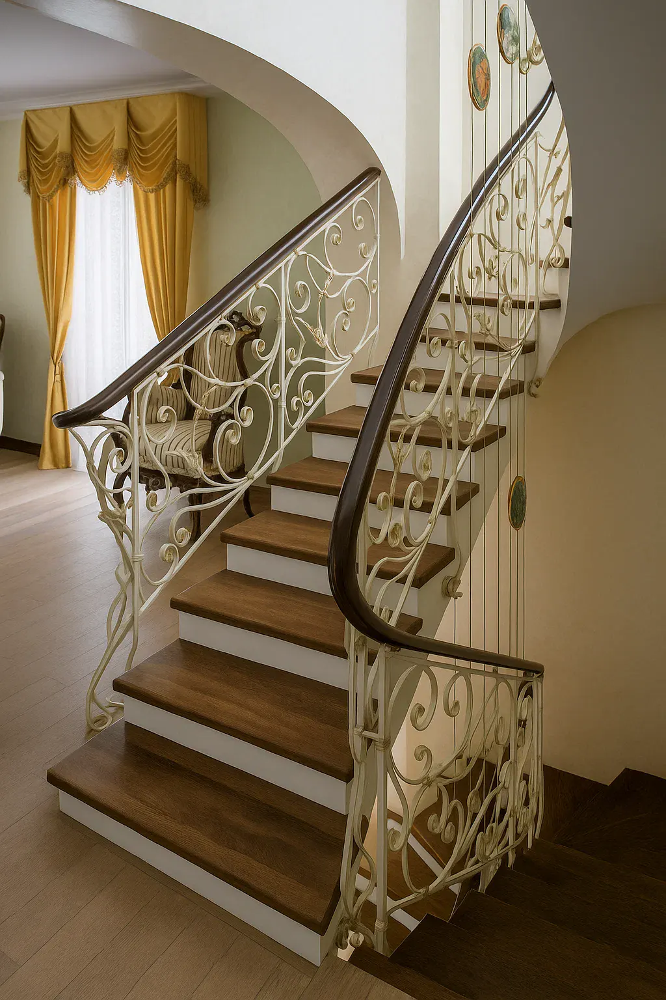
Интерьер загородного дома
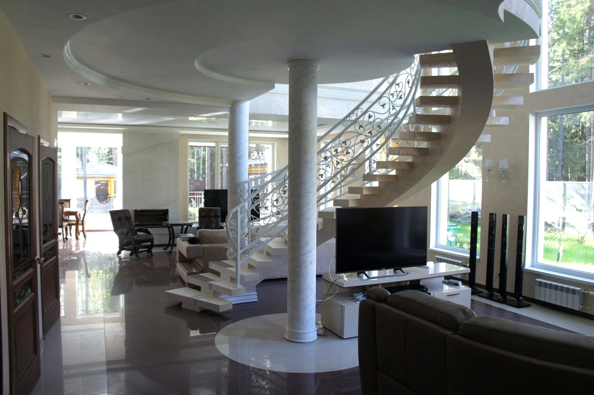
Интерьер загородного дома
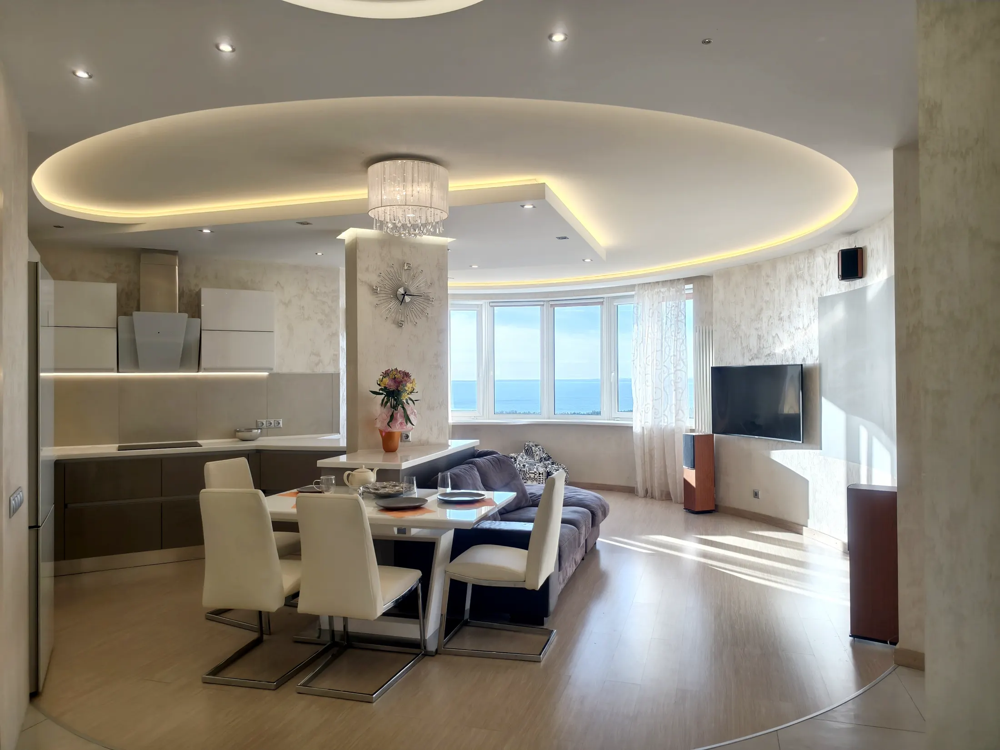
Интерьер
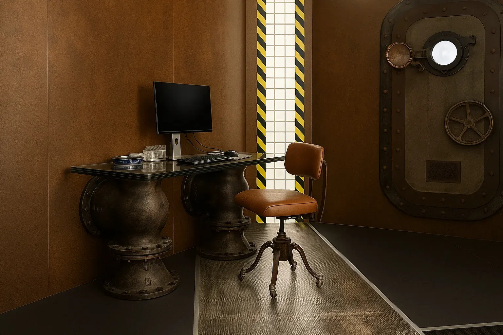
Коммерческий интерьер
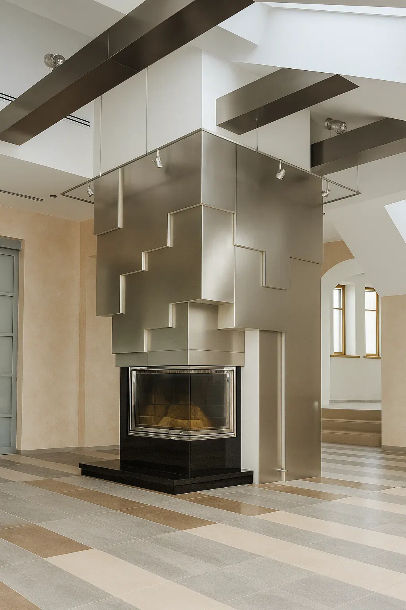
Интерьер
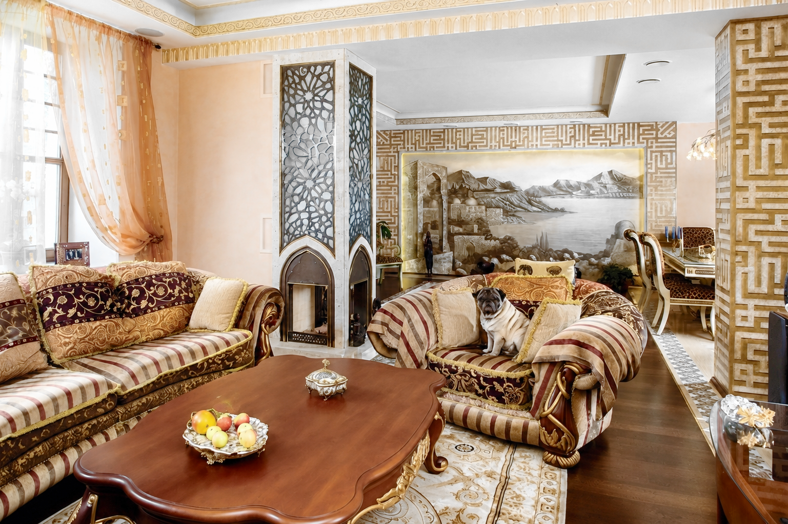
Интерьер квартиры
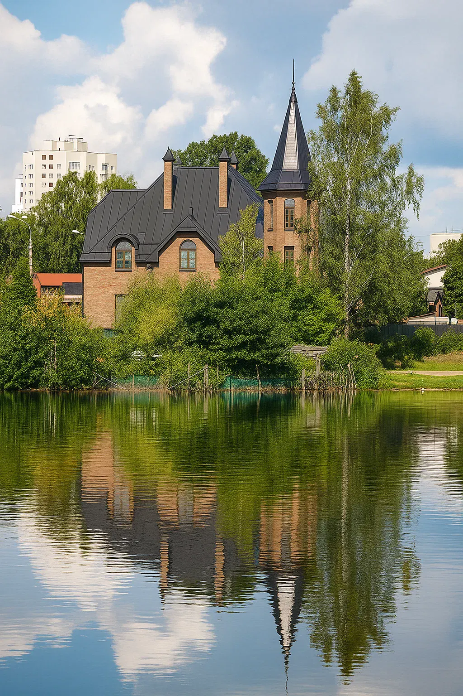
Архитектура загородного дома
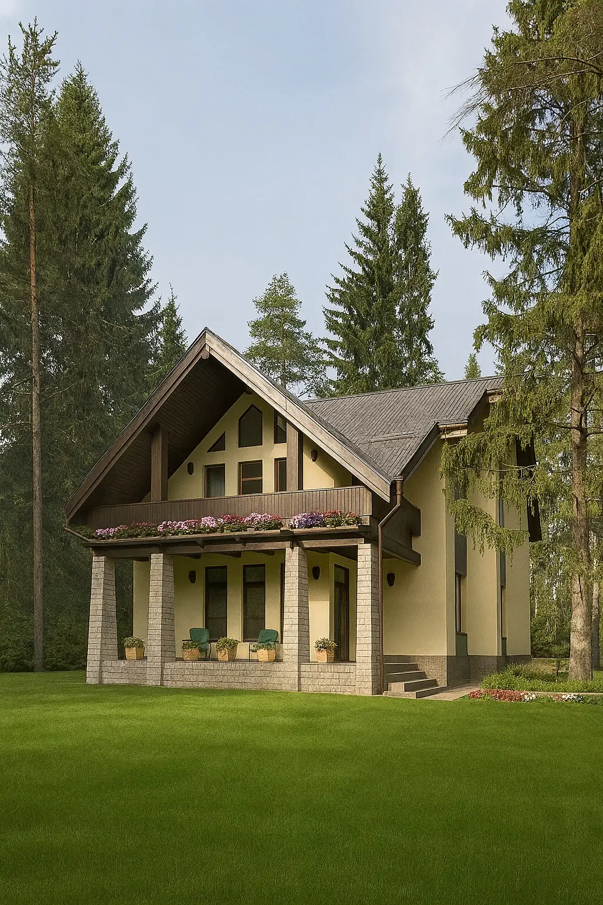
Загородный дом
Motion
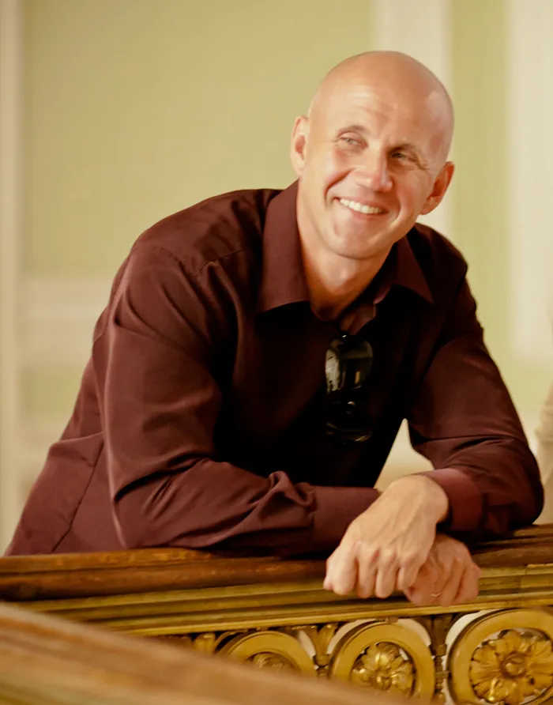
Об архитекторе
Родился в 1976 году в Ленинграде.
В 1999 году окончил Ленинградское высшее художественно-промышленное училище имени В. И. Мухиной по специальности «Интерьер и оборудование».
В 1997 году работал в архитектурной студии С. В. Тирских. В 1998–1999 гг. — в творческой мастерской Сергея Ерофеева. В 2000–2003 гг. — в творческой мастерской Андрея Курочкина и Дмитрия Федорова.
В 2003–2005 гг. работал главным архитектором в строительной фирме СМК «Диорит». С 2005 года занимается частной практикой.
Среди реализованных объектов — частные виллы на Балканском полуострове, загородные дома в Сестрорецке, Всеволожске, Репино и Ленинском, частные и общественные интерьеры в Санкт-Петербурге, а также участие в проектировании вейк-парка KingWinch в Кронштадте.
Услуги
Состав и этапы разработки дизайн-проекта для реализации интерьера под ключ.
Контакты
Россия, Санкт-Петербург.
Телефон, WhatsApp и Telegram. По вопросам проекта можно связаться удобным способом.
Партнеры: